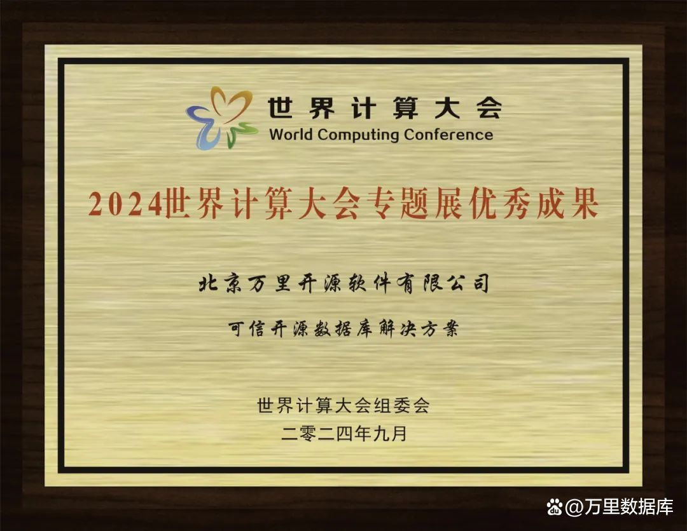
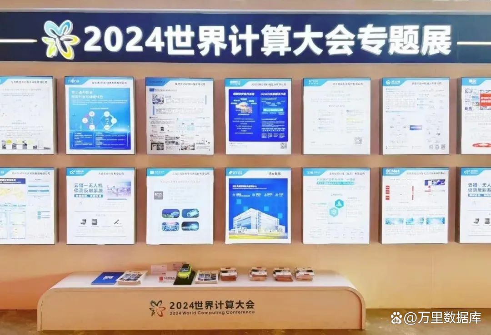
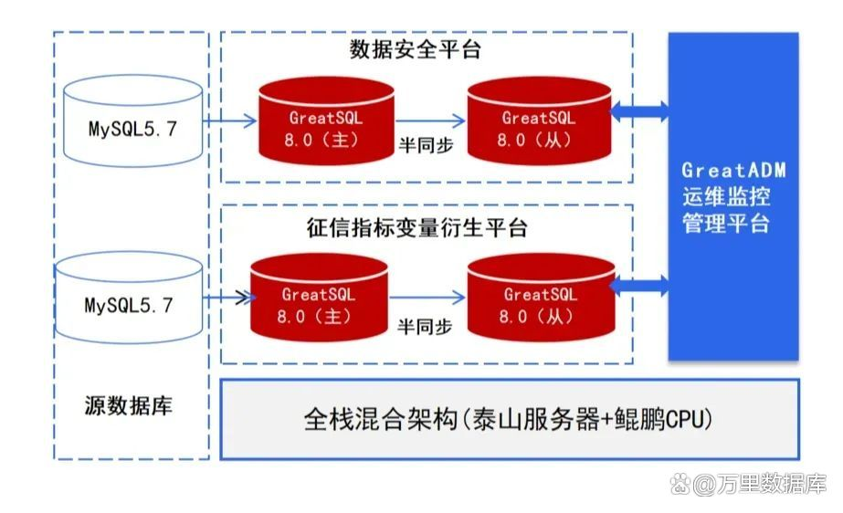

2024世界计算大会｜万里数据库蝉联“专题展优秀成果奖”
近期，“2024世界计算大会”在湖南长沙隆重开幕。大会由湖南省人民政府主办，湖南省工业和信息化厅、长沙市人民政府、中国电子信息产业发展研究院共同承办，以“智算万物·湘约未来——算出新质生产力”为主题，大会设立专题展，聚焦人工智能、智算、大模型等新兴产业，集中展示国内外计算领域的尖端技术产品。
世界计算大会
万里数据库作为国内知名的数据库产品与解决方案提供商受邀参展，凭借领先的数据库技术与可信开源数据库解决方案，荣获“2024世界计算大会专题展优秀成果奖”。

万里数据库·专题展优秀成果
2024世界计算大会专题展优秀成果旨在集中展示绿色智能计算及应用领域的先进趋势和前沿成果，其评选结果因“广征集、严评选、高影响”备受业界关注。此次入选，不仅体现了万里数据库在产品技术应用上的最新进展，也彰显了可信开源数据库解决方案对行业国产化实践的推动作用。

世界计算大会-专题展
万里数据库于2021年发起成立GreatSQL社区，社区旗下GreatSQL可信开源项目现已成为开放原子开源基金会孵化期项目，成功服务梅州客商银行银行的数据安全平台、征信指标变量衍生平台，助力业务系统进行国产化替换，通过主从架构实现数据库的高可用，满足数据存储需求。GreatSQL主从部署方式提供故障容灾保障功能，并提供本土化技术支持服务，确保业务持续、稳定、可靠运行，帮助客户实现降本增效。

梅州客商银行-解决方案架构图
值得一提的是，GreatSQL在性能方面表现十分亮眼，不仅支持InnoDB并行查询，在TPC-H测试中平均提升15倍，最高提升超过40倍；通过优化InnoDB事务系统及无锁化等多种优化方案，OLTP场景整体性能提升约20%，还支持并行load data，在频繁导入大批量数据的应用场景下，性能可提升约20倍。
此外，GreatSQL针对MGR、SQL兼容特性、国密加密等高可靠、高易用、高安全方面也做了大幅提升改进，旨在为客户提供更流畅、更好用的开源数据库。
目前，GreatSQL已先后服务梅州客商银行、华润、作业帮、通达信、恒生芸擎等金融、互联网、通讯、能源多个重点行业客户，在性能、高可用、易用性等方面持续进行技术优化与更新迭代，提供丰富的场景化业务功能和服务能力，推动新质生产力在各个场景中的应用，赋能行业用户高质量发展。
面对大模型技术飞速发展的浪潮，万里数据库紧跟时代步伐，以“驱动计算、服务计算”为方向，聚焦计算产业相关的数据库技术应用，持续创造更高安全、更强性能和更具创新力的数据库产品，与算力产业链上下游企业开展合作，共同推动算力领域的创新与应用，助力中国计算产业朝着更快、更稳、更安全的方向发展。